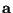
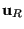
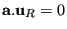

Next: *ROBUST DESIGN Up: Input deck format Previous: *RETAINED NODAL DOFS Contents
Keyword type: model definition
With this card a rigid body can be defined consisting of nodes or elements. Optional parameters are REF NODE and ROT NODE.
One of the parameters NSET or ELSET is required. Use NSET to define a rigid body consisting of the nodes belonging to a node set and ELSET for a rigid body consisting of the elements belonging to an element set. In the latter case, the rigid body really consists of the nodes belonging to the elements. The parameters NSET and ELSET are mutually exclusive. The rigid body definition ensures that the distance between any pair of nodes belonging to the body does not change during deformation. This means that the degrees of freedom are reduced to six: three translational and three rotational degrees of freedom. Thus, the motion is reduced to a translation of a reference node and a rotation about that node. Therefore, the location of the reference node is important since it is in this node that the resultant force is applied (this force may be defined by the user of may be the result of the calculation).
The reference node can be specified by the parameter REF NODE and should have been assigned coordinates using the *NODE card. The reference node can belong to the rigid body, but does not necessarily have to. Notice, however, that if the reference node belongs to the rigid body any forces requested by specifying RF on a *NODE PRINT card will not be correct. If no reference node is defined by the user the origin of the global coordinate system is taken (default).
For the rotational degrees of freedom a dummy rotational node is used whose translational degrees of freedom are interpreted as the rotations about the reference node. Thus, the first degree of freedom is used as the rotation about the x-axis of the rigid body, the second as the the rotation about the y-axis and the third as the rotation about the z-axis. The rotational node can be defined explicitly using the parameter ROT NODE. In that case, this node must be been assigned coordinates (their value is irrelevant) and should not belong to any element of the structure.
In the absence of any of the parameters REF NODE or ROT NODE, extra nodes are generated internally assuming their tasks. The position of the default REF NODE is the origin. However, defining the nodes explicitly can be useful if a rotation about a specific point is to be defined (using *BOUNDARY or *CLOAD), or if rigid body values (displacements or forces) are to be printed using *NODE PRINT. Notice that a force defined in a rotational node has the meaning of a moment.
Internally, a rigid body is enforced by using nonlinear multiple point constraints (MPC).
If the participating nodes in a rigid body definition lie on a straight line, the rigid body rotation about the line is not defined and an error will occur. To remove the rotational degree of freedom, specify that the rotation about the axis is zero. If  is a unit normal on the axis and  is the displacement of the ROT NODE, this results in a linear MPC of the form  to be specified by the user by means of a *EQUATION card.
First and only line:
Example: *RIGID BODY,NSET=rigid1,REF NODE=100,ROT NODE=101
defines a rigid body consisting of the nodes belonging to node set rigid1 with reference node 100 and rotational node 101.
Using
*CLOAD 101,3,0.1
in the same input deck (see *CLOAD) defines a moment about the z-axis of 0.1 acting on the rigid body.
Example files: beamrb.